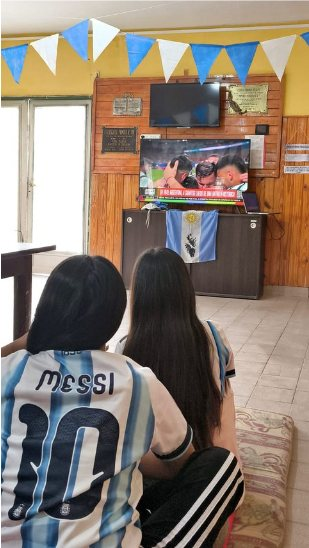
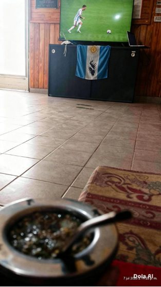
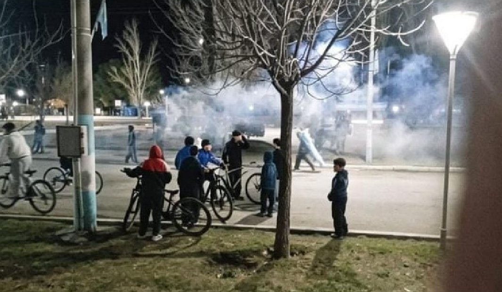

El Mundial 2026 fue una experiencia increíble para toda la comunidad de Peñas Blancas.

La preparación
Decoramos la escuela con banderas argentinas y preparamos todo para ver los partidos juntos. Fue una experiencia muy emotiva.

El día del partido
El 22 de junio vimos el partido todos juntos. La emoción se sentía en el aire. Cada gol era celebrado por toda la comunidad.

Los festejos
Después de cada victoria, salimos a festejar a las calles. Compartimos mates, abrazos y lágrimas de alegría.
El Mundial 2026 nos enseñó que el deporte une a las personas y crea lazos que duran toda la vida.
